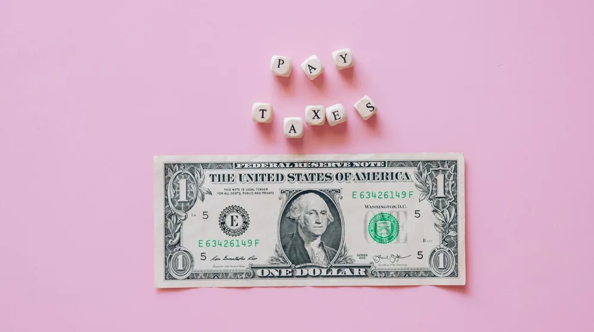

근로장려금, 나도 받을 수 있을까? 초보자를 위한 신청 조건과 절차 완벽 가이드
사진: https://kaboompics.com/ / Pexels (무료 이미지, 출처 표기)
근로장려금, 왜 받아야 할까요?

근로장려금은 열심히 일하지만 소득이 적어 생활에 어려움을 겪는 가구를 지원하기 위한 제도입니다. 근로를 장려하고 실질적인 소득을 보전해줌으로써, 저소득 가구의 생활 안정을 돕는 것이 주요 목적입니다. 정부에서 제공하는 중요한 복지 혜택인 만큼, 조건에 해당한다면 반드시 신청하여 도움을 받는 것이 좋습니다.
이 제도는 가구의 소득과 재산 기준을 충족할 경우 지급되며, 자녀장려금과 함께 저소득층의 경제적 자립을 돕는 데 기여합니다.
근로장려금 신청 조건, 이것부터 확인하세요
근로장려금을 받기 위해서는 가구 유형, 소득, 재산 요건을 모두 충족해야 합니다. 2026년 10월 기준으로 작년(2025년) 귀속 소득과 올해(2026년) 6월 1일 현재 재산을 기준으로 판단합니다. 정확한 요건은 매년 조금씩 변동될 수 있으므로, 국세청 홈택스에서 최신 정보를 확인하는 것이 가장 중요합니다.
1. 가구 유형별 기준
- 단독가구: 배우자, 부양자녀, 70세 이상 직계존속이 없는 경우를 말합니다.
- 홑벌이가구: 배우자나 부양자녀, 70세 이상 직계존속 중 한 명이라도 있으면서, 배우자의 총급여액 등이 3백만 원 미만인 경우입니다.
- 맞벌이가구: 배우자가 있고, 신청인과 배우자 각각의 총급여액 등이 3백만 원 이상인 경우입니다.
2. 소득 조건 (2025년 귀속 총소득 기준)
가구 유형에 따라 총소득 기준금액이 달라집니다. 사업소득, 근로소득, 종교인소득, 이자·배당·연금소득, 기타소득 등을 모두 합산한 금액입니다.
- 단독가구: 2,200만 원 미만
- 홑벌이가구: 3,200만 원 미만
- 맞벌이가구: 3,800만 원 미만
3. 재산 조건 (2026년 6월 1일 현재 가구원 전체 재산 합계액 기준)
주택, 토지, 건물, 예금, 보험, 증권 등 모든 재산의 합계액이 2억 4천만 원 미만이어야 합니다. 부채는 재산에서 차감되지 않으므로 주의해야 합니다. 재산 합계액이 1억 7천만 원 이상 2억 4천만 원 미만인 경우에는 근로장려금 산정액의 50%만 지급됩니다.
4. 신청 제외 대상
대한민국 국적을 보유하지 않은 자, 전문직 사업자, 직계존속 및 배우자로부터 증여받은 재산이 있는 경우 등은 신청 대상에서 제외될 수 있습니다. 또한, 다른 거주자의 부양자녀로 인정된 자 역시 신청할 수 없습니다.
얼마나 받을 수 있을까? 가구별 최대 지급액은?
근로장려금은 가구 유형 및 총급여액 등에 따라 지급액이 달라집니다. 2026년 10월 기준으로 최근 지급 기준은 다음과 같습니다. 아래 금액은 최대 지급액이며, 실제 지급액은 소득 구간에 따라 달라질 수 있습니다.
정확한 예상 지급액은 국세청 홈택스 모의 계산 기능을 활용하거나, 관할 세무서에 문의하여 확인하는 것이 좋습니다.
놓치지 마세요! 근로장려금 신청 절차
근로장려금은 정기 신청과 반기 신청으로 나뉘며, 보통 ARS 전화, 홈택스 앱, 홈택스 웹사이트를 통해 간편하게 신청할 수 있습니다. 2026년 10월 현재, 정기 신청은 통상 5월에, 반기 신청은 상반기분 9월, 하반기분 다음 해 3월에 이루어집니다.
1. 신청 안내문 확인
국세청에서 신청 대상자에게 모바일 또는 우편으로 신청 안내문을 발송합니다. 안내문에 기재된 개별 인증번호를 활용하면 더욱 편리하게 신청할 수 있습니다.
2. 신청 방법 선택 및 접속
- ARS 전화 (1544-9944): 안내문에 기재된 개별 인증번호를 입력하여 신청합니다.
- 홈택스 앱: 스마트폰에서 '국세청 홈택스' 앱을 설치 후 '근로장려금' 메뉴에서 신청합니다.
- 홈택스 웹사이트: PC에서 국세청 홈택스(www.hometax.go.kr)에 접속 후 '근로장려금·자녀장려금' 메뉴에서 신청합니다.
- 세무서 방문: 직접 세무서에 방문하여 신청 도움을 받을 수도 있습니다.
3. 신청 정보 입력
안내문에 기재된 정보가 정확한지 확인하고, 추가로 필요한 정보(계좌번호 등)를 입력합니다. 혹시 안내문 없이도 소득 요건을 충족한다면 기한 내에 직접 신청할 수 있습니다.
4. 신청 완료 및 결과 확인
신청이 완료되면 접수증을 확인할 수 있습니다. 심사를 거쳐 지급 여부와 지급액이 결정되며, 그 결과는 신청 마감일로부터 약 3~4개월 후 통보됩니다. 2026년 10월 현재, 정기 신청분은 9월 말, 반기 신청분은 6월 및 12월에 지급됩니다.
자주 묻는 질문과 주의할 점
Q. 신청 기간을 놓쳤다면 어떻게 해야 하나요?
정기 신청 기간을 놓쳤더라도 기한 후 신청이 가능합니다. 다만, 기한 후 신청 시에는 장려금 산정액의 90%만 지급되며, 신청기한 종료일 다음 날부터 5년 이내에 신청해야 합니다.
Q. 부채는 재산에서 제외되나요?
근로장려금 재산 요건을 판단할 때 부채는 재산에서 차감되지 않습니다. 오직 순수 재산 합계액을 기준으로 합니다.
Q. 근로장려금과 자녀장려금은 동시에 받을 수 있나요?
네, 근로장려금과 자녀장려금은 요건을 충족하면 동시에 신청하여 받을 수 있습니다. 자녀장려금은 18세 미만의 부양자녀가 있는 경우에 신청할 수 있는 제도입니다.
Q. 안내문을 받지 못했는데 신청할 수 있나요?
네, 안내문을 받지 못했더라도 소득 및 재산 요건을 충족한다면 직접 홈택스 등을 통해 신청할 수 있습니다. 본인이 신청 요건에 해당한다고 판단되면 적극적으로 확인 후 신청하세요.
근로장려금은 소득이 적은 가구에 큰 도움이 되는 제도입니다. 신청 조건을 꼼꼼히 확인하고, 놓치지 말고 신청하여 혜택을 받으시길 바랍니다. 가장 정확한 정보는 국세청 홈택스 웹사이트 또는 세미래 콜센터(126)를 통해 확인하실 수 있습니다.
🔗 이 글도 함께 보면 좋아요: 청년내일저축계좌, 나도 받을 수 있을까? 신청 자격부터 방법까지 완벽 가이드